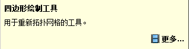
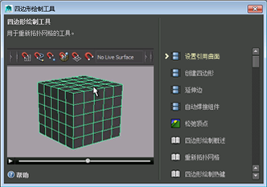

通过使用 Maya 界面访问的简短视频片段，工具动画演示提供了轻松访问学习内容的方法。您仅需将鼠标悬停在任何按钮或图标上方即可激活工具。
它们将展示特定工具（如建模工具包中的工具）的功能。例如，单击 以显示“建模工具包”(Modeling Toolkit)，然后将鼠标悬停在任何“工具”(Tools)按钮（如  ）上方。
）上方。
将显示“四边形绘制工具动画演示”(Quad Draw ToolClip)窗口。

单击“更多”(More)展开“四边形绘制工具动画演示”(Quad Draw ToolClip)以显示更多细节，如简短视频片段、图像和“帮助”(Help)中相关主题的链接。

若要在界面中激活“工具动画演示”显示，请执行以下操作：
- 选择以打开“首选项”(Preferences)窗口。
- 在“帮助”(Help)部分中，选择选项。